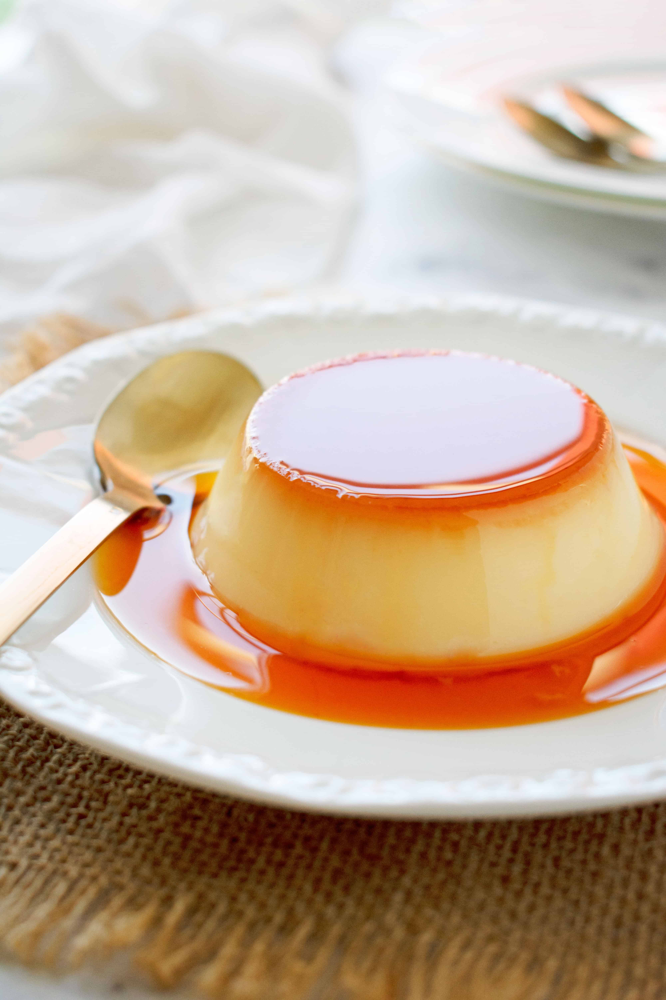

Caramel Flan

Contains: Eggs, Milk, Sugar, Vanilla
Learn how to make a wonderful 4 ingredient caramel flan in just 30 minutes!
Ingredients:
- 6 eggs
- 850mL Milk
- 50-150g Granulated Sugar
- 1tbsp Vanilla Extract
Steps:
- Warm up the milk for 4 minutes in the microwave
- Whisk together whole eggs and vanilla extract
- Incorporate warm milk slowly and whisk together
- Add sugar to desired sweetness
- Optional: strain mixture and remove bubbles
- Warm up sugar and water in a pan until caramel is light orange
- Pour caramel to bottom of flan dish (pyrex recommended)
- Pour milk/egg mixture into the dish over the hardened caramel
- Bake at 440F for 25-30'